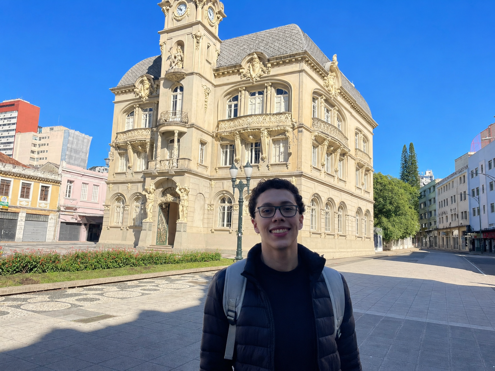
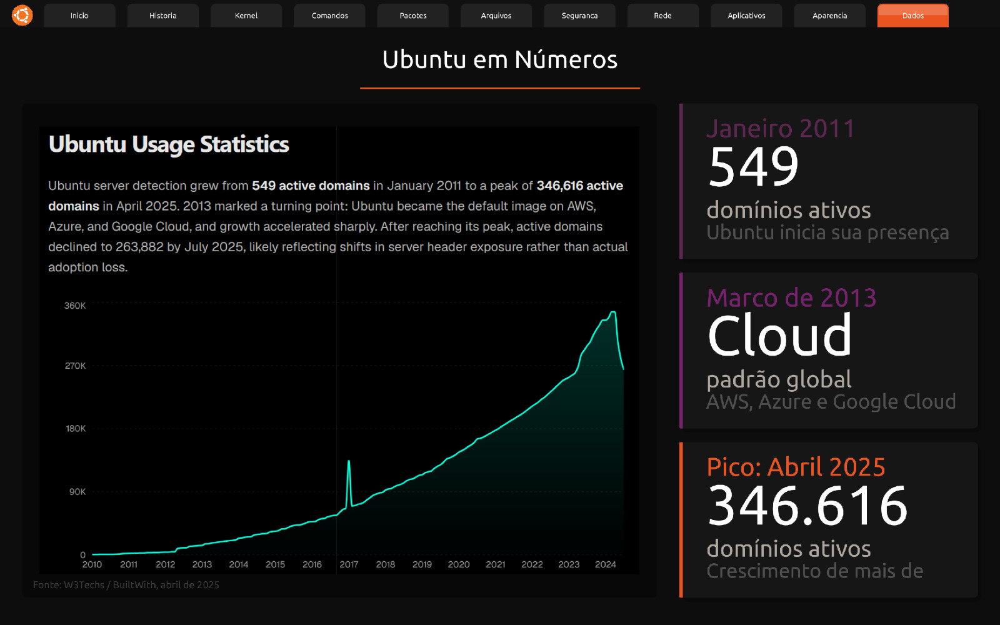

"Nenhum vento sopra a favor de quem não sabe para onde ir." - Sêneca
Sou o Guilherme, tenho 18 anos e sou aficionado por descobrir e testar coisas novas (tecnologias, comidas, estudos). Sou nascido e criado em Registro/SP e me mudei esse ano para Curitiba para iniciar a faculdade. Lá, durante o Ensino Médio, realizei o curso técnico de Mecatrônica integrado ao Ensino Médio no IFSP, onde tive ainda mais interesse pela área de tecnologia e vontade de aprender mais sobre.
Desde criança sou apaixonado por matemática (um dos motivos que me fez escolher um curso de exatas) e resolução de problemas, devido a isso, acredito que a área que mais me atrai é a de desenvolvimento de software (back-end), onde posso aplicar meus conhecimentos e resolver problemas.
Sempre que posso, assisto partidas nacionais e internacionais.
Durante o meu dia a dia sempre escuto música como forma de distração.
Gosto de ler livros de ficção (suspense, ação, ficção científica) e não ficção (história, filosofia, biografias).
| Disciplina | Por que gosto? |
|---|---|
| Raciocínio Algorítmico | Gosto de exercitar meu raciocínio lógico e matemático, junto ao estudo de programação. |
| Experiência Criativa | Coloco em prática por meio de projetos os conhecimentos adquiridos ao longo do curso. |
| Filosofia | Nos ensina a pensar e refletir, habilidades essenciais no mundo atual. |

Aplicativo desenvolvido como forma de introdução e estudo do sistema operacional Linux Ubuntu.
Ver Projeto